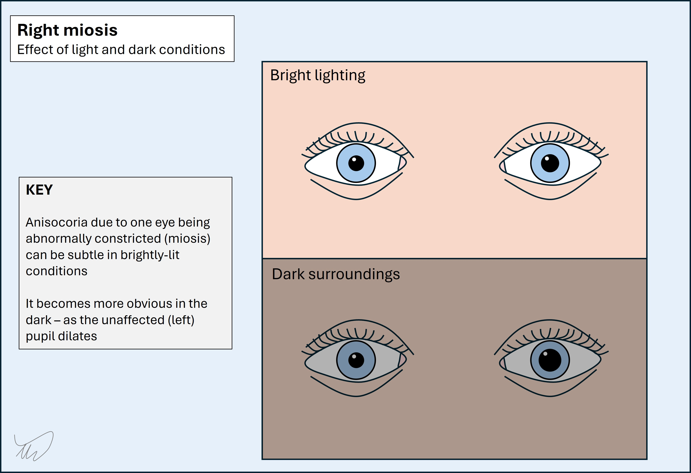
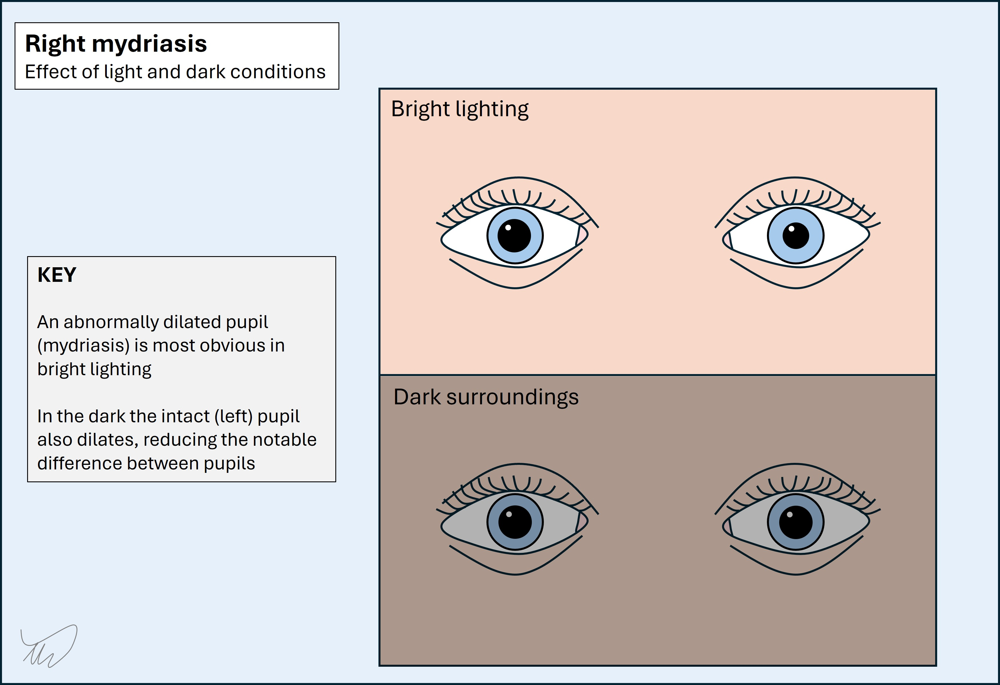
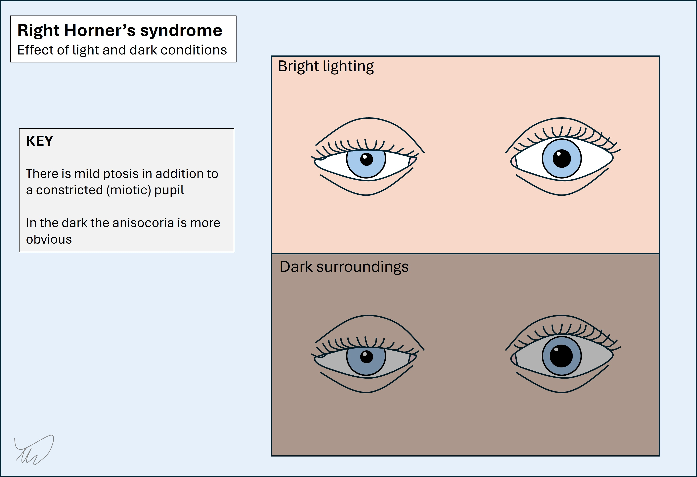
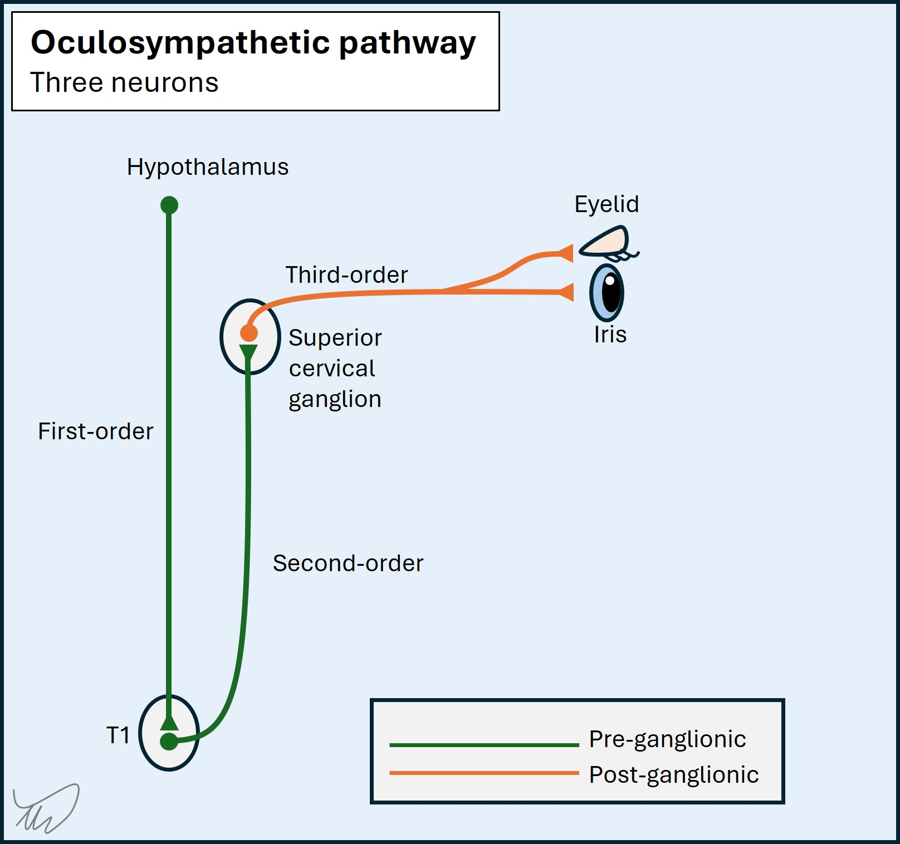
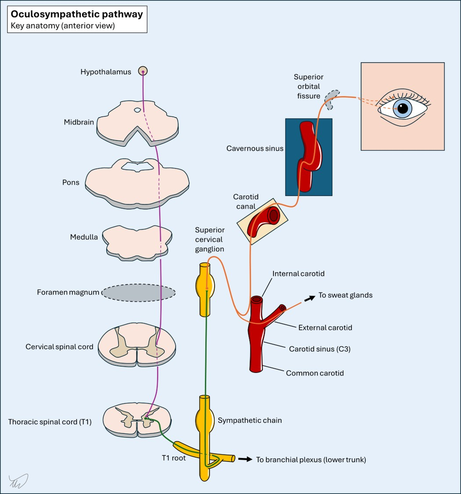

Case 22 - Asymmetric pupils
Where is the lesion?
The features here are all acute - headache with neck pain, asymmetrical pupils (anisocoria), a single droopy eyelid, and then a transient episode of right-sided weakness with expressive dysphasia. There is one condition which unifies all of this - and if you know it, well done - but we can consider each feature in turn first and see if we can find something that fits.
Headache is very common, and so is neck pain. The majority of causes of each are benign. When they co-occur it can raise some concern for other conditions. Many are benign, too - but some are deadly.
Examples of benign causes include migraine (neck discomfort and stiffness is very common), and cervicogenic headache - i.e. headache due to referred pain from the neck, often due to musculoskeletal problems. Headache with a stiff and sore neck is also quite common in viral illnesses such as flu, due to myalgia, easily mistaken for meningism.
The combination can also signify serious pathology - for example through meningeal inflammation, arterial damage, venous thrombosis, and dangerous musculoskeletal conditions.
In general, an acute headache with abrupt-onset neck pain should raise concern for potentially serious causes, and the decision regarding if and how to investigate depends on the clinical situation. Co-existing focal neurological signs is an important predictor of a 'serious' cause of headache.
Here, headache and neck pain isn't enough to make a complete diagnosis - but the other features will help us.
Pupil asymmetry has many causes. Often the first challenge is knowing which pupil is abnormal - is one too small or the other too large? This is most obvious when there is a marked asymmetry or something else in the same eye, for example ptosis (as in this case). Another example would be ophthalmoplegia. If in doubt it is helpful to test the pupillary reflexes and also vary the lighting.
Anisocoria worse in dark conditions suggests the smaller eye is pathologically constricted (miosis). This eye should dilate, but doesn't, while the healthy eye does - so the difference increases.

Anisocoria worse in bright conditions suggests the larger eye is pathologically dilated (mydriasis) - it should constrict, but doesn't. In the dark, it's less obvious, because the smaller (intact) eye will dilate in the dark, reducing the difference.

Important causes of anisocoria include the following:
There is much that could be said on each of these. We've covered III palsy before (Case 14 ). We will return to Horner's.
In Adie's tonic pupil one eye is pathologically dilated and accomodates slowly to near-stimulus; the issue is more obvious in bright conditions. Trigeminal autonomic cephalalgias are short-lived (seconds-hours at most) and feature intense unilateral pain and other features such as flushing, nasal fullness and streaming tears from one eye. A previous ocular disorder causing anisocoria should be evident previously - reviewing old notes or photos or asking a relative is helpful. Ocular conditions often have other features present to provide clues
Here the description is of asymmetry that gets more apparent in the dark. That suggests the smaller pupil (miotic) is the abnormal one. It's helpful that there's also mild ptosis. Finally there is no ophthalmoplegia. This is all consistent with Horner's syndrome - and doesn't suggest any of the other conditions.

The sympathetic nervous system supplies each eye, including regulating pupil size - it dilates the pupil, whereas the parasympathetic constricts it - and innervating a small muscle involved in eyelid elevation (Müller's muscle). Unilateral damage leads to Horner's.
The sympathetic pathway underlying Horner's is relatively simple in that it's a single, unilateral pathway with no decussation. This makes it a very good lateralising sign - we know that the lesion is on the same side as the affected eye.
The problem is, it's not a good localising sign at all, because the pathway is very long. It has three neurons involved and they span a long course from hypothalamus through the brainstem and spine then out via the sympathetic chain then riding with the carotid, and eventually reaching the eye through the orbit (see later). On its own, we can't localise neatly with Horner's, and have to look for other features to help.
One tool that helps is chemical assistance - different eye drops can be used. In practice we often don't use these, and they only tell us whether i) this is Horner's and ii) if it is due to third-order neuron damage or not, with little other precision offered from a localisation standpoint.
The only way to localise Horner's clinically is via cross-localisation - as lesions in certain areas feature Horner's in addition to other features. If we see those, we can place the lesion. Some important examples are shown later - if we identify Horner's we should always look for these additional localising clues. Many of the relevant causes are deadly.
Branch-mapping, our other tool for long pathways, is of little use here. The only branching in the pathway is at the carotid, as the sympathetic fibres to the face separate here and travel with the external carotid, so anhidrosis doesn't arise from lesions more distal to this. This isn't particularly helpful clinically, but occasionally patients notice absent sweating and flushing over one side of the face during exercise and report this. If someone's face flushes and sweats symmetrically during exercise then the lesion must be in the third-order neuron and distal to the external carotid. However, most people haven't noticed this subtle feature.
We will now review the pathway involved to make sense of this case - the oculosympathetic pathway.
There are three neurons involved - termed first-, second- and third-order neurons. A simple 'wiring diagram' shows the overall pathway:

The first order neuron travels from the hypothalamus down the dorsolateral brainstem.
The tract then descends in the lateral cervical spine, spanning its entire length, and the neurons synapse at levels C8-T2 in the ciliospinal centre (of Budge) in the lateral part of the grey matter.
The second order neuron then leaves the cord and travels out via the ventral root on the same side. It ascends in the sympathetic trunk in the neck, more or less in line with the anterior tubercles of the cervical spine, until reaching the superior cervical ganglion (C2-C3 level), where it synapses.

The third order neuron travels to the carotid plexus (a net-like structure of nerves around the artery). The branches for the facial sweat glands travel via the external carotid, and those for the eye and eyelid via the internal carotid artery (ICA). They follow the ICA back into the skull via the carotid canal in the petrous temporal bone.
They don't leave the carotid until the cavernous sinus, where they join nerve VI then nerve V (trigeminal branch, V1) and leave the cavernous sinus. The fibres involved in pupil dilatation travel with V through the superior orbital fissure (SOF) then within the nasociliary nerve branch and then the long ciliary nerve, piercing the back of the eye, passing through the choroid and reaching the iris - innervating the iris dilator muscle via alpha-1 adrenergic receptors.
The opposite function, constriction, is conducted by parasympathetic fibres of nerve III, which synapse in the ciliary ganglion, then are carried in the short ciliary nerves to the iris sphincter muscles, which are stimulated by muscarinic receptors.
The other sympathetic fibres travel to the superior tarsal muscle (of Müller), keeping the eyelid raised. In Horner's this function is lost, but the ptosis is milder than what is seen in nerve III palsies - as III provides tonic innervation to the levator palpebrae superioris muscle, which, when inactivated, causes more profound ptosis.
The oculosympathetic pathway is long, passing by multiple other structures along the way. This means that Horner's often occurs with additional neurological features - allowing cross-localisation.
1. Brainstem
Key brainstem lesions are dorsolateral. They often involve the spinothalamic and trigeminothalamic tracts, the adjacent cerebellar peduncles, and other nuclei, for example:
2. Cervical spinal cord
The sympathetic tract descends near the centre. Lesions affect:
Horner's can be seen in central lesions such as syringomyelia, and lateral cord lesions (causing Brown-Sequard syndrome)
3. T1 root
Lesions here also affect the T1 myotome and dermatome, with weak intrinsic hand muscles, sensory loss in T1 (medial forearm). More extensive lesions may also affect C8, or both in the lower trunk of the brachial plexus. A good example is the Pancoast tumour.
4. Carotid sheath
This houses the sympathetic tract but also the final cranial nerves (IX-XII). Lesions may affect any combination of these, but the full house (IX-XII with Horner's) is called Villaret syndrome.
5. Cavernous sinus
The sympathetic tract travels here along with nerves III-IV-V1-VI. Lesions may cause ophthalmoplegia with Horner's - but if III is invovled the pupil may be dilated and the ptosis may be more severe, hiding it. Parkinson's sign is VI with Horner's.
In addition to finding co-localising neurological features, two other clues can help.
PainPain may be a localising clue but is less reliable than neurological signs. Carotid lesions may cause ipsilateral neck pain, sometimes with headache - or just headache if the upper, intracranial portions are involved. Vertebral artery dissection is also painful and can cause Horner's through lateral medullary infarction. Shoulder pain might suggest a T1 root or plexus lesion.
Embolic phenomena
Carotid pathology can lead to stroke and transient ischaemic attack (TIA) due to emboli to the brain or retina. This is exactly what happened here - he had what sounds like a TIA within the left middle cerebral artery (MCA) territory, affecting the left hemispheric speech centres and the sensory and motor supply to the right hand.
This patient has Horner's without any other localising signs, and he has left-sided headache and neck pain. Then he had a left hemispheric TIA. He also has no other signs to cross-localise this to a particular site.
This suggests a lesion involving the sympathetic tract as it runs with the ascending carotid artery, which is also involved.
The sympathetic tract leaves the carotid in the cavernous sinus, so the lesion must be between the point where the sympathetic joins the carotid in the extracranial space and the separation point in the cavernous sinus. We can't be any more specific - this could be extracranial, intracranial, or both - but clearly the carotid needs to be imaged urgently.
What is the lesion?